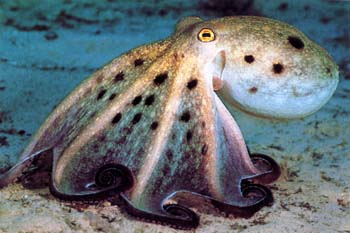

<!DOCTYPE htlm>
<htlm> 
	<head>
		<meta charset = "utf-8"/>
		<link 	rel="stylesheet" 
			type="text/css" 
			href="style.css">
		<title> Poulpe </title>
	</head> 
	<body>
		<h1> Les poulpes ou pieuvres </h1>
 		

	<div class="Degrade">
	<div class="Police">
  		<p>Ces animaux se caractérisent, au sein des céphalopodes, par leurs huit bras et leur grande intelligence. Le corps est entièrement mou hormis un 			bec, qui ressemble à certains égards à celui des perroquets. <br/> Le mot « poulpe » vient du grec. Ce mot « pieuvre » est d'origine plus récente que « 			poulpe » : il semble cependant en dériver, si l'on en juge par la forme intermédiaire « poufre » ou « pouvre » que l'on rencontre dans le vocabulaire 			des pêcheurs sétois. « Pieuvre » est emprunté aux pêcheurs guernesiais par Victor Hugo lors de son séjour sur cette île anglo-normande : en 1865 il 			introduit ce mot en français dans son roman Les Travailleurs de la mer. Le succès de cette œuvre est tel, que « Pieuvre » supplante rapidement le mot 			« poulpe » dans l'usage courant et passe même en italien avec le mot piovra. </p>
	</div> </div>
		<h2> Biologie </h2>
	<div class="Degrade">
	<div class="Police">
		<p> Le cœur principal ou « systémique » est relayé par deux petits cœurs branchiaux qui pompent le sang oxygéné par les branchies. La pieuvre a le sang bleu et non rouge comme chez les vertébrés à cause de l'absence d'hémoglobine qui est remplacée par l'hémocyanine.
Certaines espèces ont une espérance de vie de six mois, alors que la pieuvre géante peut vivre cinq ans si elle ne se reproduit pas. </p>
	</div></div>
		<h2> Intelligence </h2>
	<div class="Police">
	<div class="Degrade">
		<p> la pieuvre fait preuve d'une intelligence étonnante pour un invertébré. Elle serait capable de déduire, de mémoriser et d'apprendre. Par exemple, des pieuvres ont compris par observations successives comment retirer le couvercle d'un bocal pour accéder à la nourriture contenue dans ce dernier.

Pour des raisons inexpliquées, il arrive également aux pieuvres de disposer des coquillages ou débris autour de leur habitat. Certains comparent ce comportement à une forme de décoration.

Elles possèdent une mémoire, stockée dans leurs nombreux neurones. Les poulpes de Méditerranée sont sans conteste les plus astucieux car, vivant dans l’environnement relativement hostile de l’Empédocle, volcan sous-marin situé entre la Sicile et la Tunisie, ils ont appris à tirer avantage des émanations sous-marines : de nombreux crustacés meurent d'excès de chaleur ou d'hypoxie autour des évents, et les poulpes viennent ensuite les déguster. Les filets perdus par les pêcheurs qui continuent à piéger des poissons au fond, profitent aussi au poulpe de Méditerranée qui vient les y dévorer. </p>
	</div></div>
	</body>
<htlm>
